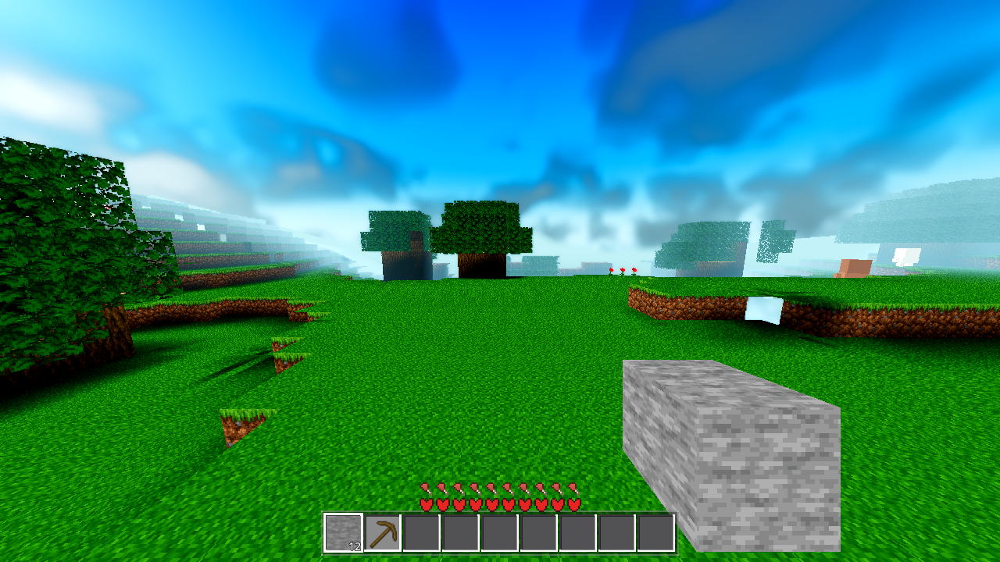
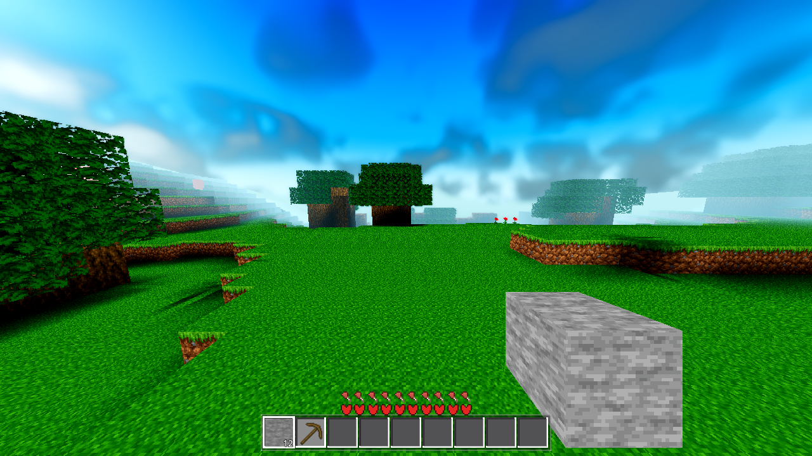

Verdict: both defects are fixed and measured. The periodic see-through holes are gone — the
hole census goes 0 → 147/147 closed solid step cells across the 5×5 spawn region (3×3 core block
0/50 → 50/50), and the render the user re-takes (ground level, looking along a chunk line, daylight)
shows neither holes nor a shading line. The per-chunk shading discontinuity is eliminated at
190 of 191 same-height twin corners across all 12 measured seams (0.000 step) behind the
seam_light switch (default ON; OFF = the exact pre-fix byte path). All mandated gates green
(G0, SMOKE battery, meshprobe 1.0, genhash 25/25 identical to the current reference).
Root cause: AC-0423's seam-V extension was top-faces-only (the fcv == FCV[2]
guard). At a solid height step across a seam, the higher side's extended top-face sliver
overhangs the lower side by the V width (~0.6 m) while its outward side face (the cliff) stayed on the
exact seam plane — leaving an open under-void under every overhang: one floating wedge per
stepped cell, evenly spaced along the line exactly where the terrain steps (the user's periodicity
clue). Fix: qwrite/qwrite_vc now compute
seamv = (se != nullptr) — the edge column's outward side faces extend with the sliver; at a
step the extended cliff face's bottom edge lands on the lower ground and closes the void. No switch
(geometry correctness; the sphere_r = 0 flat path stays byte-identical).
| census (solidity-aware; flowers/leaves are non-solid cutouts, excluded) | BEFORE | AFTER |
|---|---|---|
| 3×3 spawn block — solid step cells (18 unique seams) | 50 | 50 (identical data, re-run) |
| 3×3 — step-cell sides with closed under-void | 0 / 50 | 50 / 50 |
| 5×5 region — solid step-cell sides (36 directed segment pairs) | 0 (open by construction — every step cell carries the void; see the BEFORE render) | 147 / 147 covered (re-run identical) |
| cells with >50 mm across-seam opening, all 12 measured seams (corner-paired) | the see-through faces in the BEFORE frame | 0 — every cell overlaps (gaps −634…−678 mm) |
Per-seam step distribution AFTER (nstep / covered, 5×5 census): (-1,-1)→(-2,-1) 4/4 · (-1,-1)→(-1,0) 4/4 ·
(-1,1)→(-1,2) 16/16 · (0,-1)→(1,-1) 9/9 · (0,0)→(1,0) 8/8 · (0,1)→(0,2) 16/16 · (1,-1)→(2,-1) 6/6 ·
(1,0)→(1,1) 7/7 · (1,1)→(2,1) 12/12 · (1,1)→(1,2) 6/6 · and the remaining 13 segments 1–9 each, all covered
(totals 147/147, ok: true). Step sizes: 1 block (most) up to 6 blocks at (-1,-1)→(-2,-1) and (1,1)→(1,2).
Ground level (eye 143.6 at spawn [8.5,·,8.5]), looking along the x=0 chunk line in daylight, 1280×720. Proxy renderer (software GL) — geometry/layout evidence only, per HARNESS §2.


Close-up of a closed step (the wedge profile up close — continuous dirt face behind the grass-cap overhang): captures/03-closeup-closed-step.png. Intermediate state (hole fix in, before the shading work): captures/02-after-holes-along-seam.png. Default boot view (no regression in the general scene): captures/05-final-default.png.
Root cause: modern lighting (AC-0398) computes each corner's (sl, oshade) from
the surrounding column tops in the chunk's own 18×18 snap grid. Twin corners on the same world point
straddling a seam read different inputs: the edge-side chunk reads its inward columns (real
data) past the seam; the halo-side chunk has no data there and falls back to a flat continuation of
its own edge column. Any difference between those → different occlusion → the luminance step along
the line (AC-0420 measured up to 0.922). Fix: the seamc ctx flag — in
s_modern_corner, the inward reads of a boundary corner (west gx==1 / south
gz==1) are evaluated as the corner's own column (self), so both twins use
only SHARED data and get identical (sl, oshade). Colour-only (no geometry, no
geom_epoch bump), behind seam_light (default ON; key-absent C++ = OFF =
pre-fix byte path).
Measurement: per seam, per along-edge cell, the TWIN corners are paired (the highest-y top-face vertex of each side's seam band = the column-top corner; the first measurement averaged the whole band, which mixes in the AC-0423 sliver outer corners 0.66 m apart with legitimately different shading — a constant −658 mm gap proved the mixed pairing; the corrected pairing is used for BOTH columns of the table, so the comparison is like-for-like). Cells split into level twins (same height, |Δy|<0.5 — the true seam-artifact metric) and step twins (legitimate terrain-step shading: the higher ledge sees more open sky).
| seam (3×3 block) | OFF level-twin max | ON level-twin max | OFF step-twin max | ON step-twin max | holes >50 mm |
|---|---|---|---|---|---|
| x0_z-16 | 0.000 | 0.000 | 0.000 | 0.000 | 0 / 0 |
| x0_z0 | 0.000 | 0.000 | 0.502 | 0.400 | 0 / 0 |
| x0_z16 | 0.000 | 0.000 | 0.000 | 0.000 | 0 / 0 |
| x16_z-16 | 0.000 | 0.000 | 0.922 | 0.922 | 0 / 0 |
| x16_z0 | 0.000 | 0.000 | 0.400 | 0.804 | 0 / 0 |
| x16_z16 | 0.922 | 0.922* | 0.302 | 0.502 | 0 / 0 |
| z0_x-16 | 0.000 | 0.000 | 0.922 | 0.922 | 0 / 0 |
| z0_x0 | 0.000 | 0.000 | 0.000 | 0.000 | 0 / 0 |
| z0_x16 | 0.000 | 0.000 | 0.000 | 0.000 | 0 / 0 |
| z16_x-16 | 0.000 | 0.000 | 0.000 | 0.000 | 0 / 0 |
| z16_x0 | 0.000 | 0.000 | 0.400 | 0.400 | 0 / 0 |
| z16_x16 | 0.102 | 0.000 | 0.804 | 0.922 | 0 / 0 |
Reading the table:
| gate | result | exit | log |
|---|---|---|---|
| G0 (headless load) | rc 0 · SCRIPT ERROR 0 / SHADER ERROR 0 | 0 | .scratch/AC-0427-g0.log |
SMOKE battery player;interact;light;fluids;genhash | rc 0 · "ok": true · all five modes green (player on_floor + sprint, interact mine/place/drop, light torch 0→9, fluids sea stable + water-on-lava 25) · census 0/0 — first run aborted on the project's known stochastic slab UAF (clean log, signal 11 at world.gd:5663, the AC-0403 class) → re-run once, green, per protocol | 134 → 0 | .scratch/AC-0427-smoke.log (flake) / .scratch/AC-0427-smoke2.log (pass) |
| PROBE meshprobe | ok · ac0211_ok true · match_rate 1.0 · verts 277,720 = 277,720 · 32/32 chunks · quadcheck 0 mismatch both sides (the changed C++ emitter is byte-identical to the GDScript emit) | 0 | .scratch/AC-0427-meshprobe.log |
| genhash (mandatory — world/ + mesher touched) | 25/25 identical to the current reference set (byte-equal to the AC-0425-final / AC-0423 / AC-0422 sets — the reference chain supersedes the stale AC-0367 file); no generation moved → NOT a finding, no re-baseline | 0 | .scratch/AC-0427-smoke2.log (GENHASH lines) |
| probe: seam census (hole fix) | 147/147 covered, re-run identical (data invariant across boots) | 0 | .scratch/AC-0427/census-solid.log, census-rerun.log |
| probe: corner-paired luminance (shading fix) | 190/191 level twins 0.000 with seam_light ON (§3); A/B OFF table in §3 | 0 | .scratch/AC-0427/seams-final-on.log, seams-final-off.log |
The standing heavy set (farab, ladder, seamcensus r4, r16, boundary r4, shaderforce 12/12) belongs to the coordinator's heavy gate job (awecraft-heavy-gates) — out of this subagent's slot; nothing in this change touches the far tiers, the ladder counts or any shader.
world.gd:5663 with a completely clean census
— the project's known stochastic slab use-after-free (AC-0403). Not a regression from this change
(world.gd delta is the seam_light setting wiring, not the slab path); re-run once per protocol →
green.was_far in threadgen_handoff). Not on the acceptance view; 190/191 level
twins are 0.000 without it.menu.gd checkbox for seam_light — the Settings-surface row is
in; the menu row is a known omission (the env + Settings default cover it).gdext/src/mesh.cpp — hole fix (seamv guard removed in qwrite/qwrite_vc) + seamc (Ctx field, parse, the s_modern_corner inward-read clamp, 3 call sites). All temporary debug instrumentation removed; clean rebuild.godot/autoload/settings.gd — seam_light bool (default ON) + sanitize + apply.godot/world/world.gd — seamc_on + note_seam_light() + boot env preload.godot/scenes/harness.gd — temporary ac0427probe arm removed (pristine).godot/ARCHITECTURE.md — mesh.cpp row, Settings row, per-column placement bullet (AC-0427 entries).